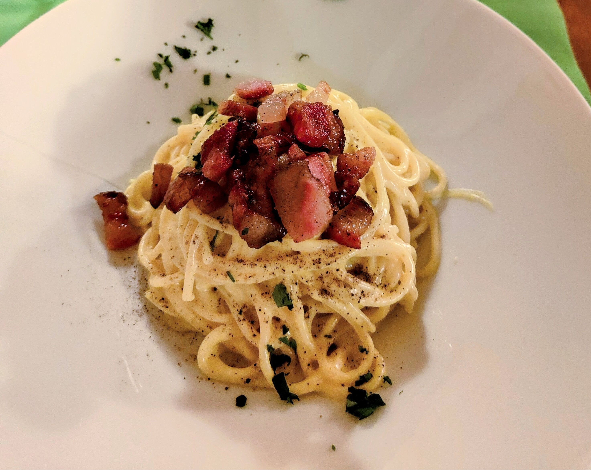
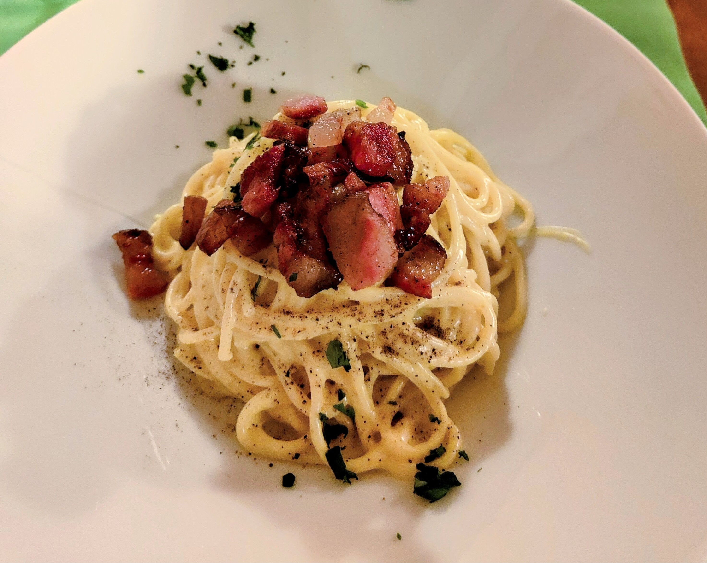

Otros artículos de comida:
Donizetti
¡Para los amantes de la comida asiática! Aqui les hablaré acerca de un platillo típico de China y otros países de Asia que ha ganado popularidad en todo el mundo: el hot pot. Y en particular, les contaré sobre el restaurante Liu's Hotpot en Barcelona.
Para aquellos que no lo saben, el hot pot es un platillo que consiste en cocinar diferentes ingredientes en una olla de caldo caliente que se encuentra en el centro de la mesa. Los comensales sumergen los alimentos crudos en el caldo caliente y los cocinan a su gusto antes de disfrutarlos. Es una experiencia social y deliciosa que puede compartirse con amigos y familiares.
En Liu's Hotpot Barcelona, encontrarán una selección de ingredientes frescos y de alta calidad, desde carnes y mariscos hasta verduras y fideos. También ofrecen una variedad de salsas y acompañamientos para personalizar el sabor de tus alimentos. Además, el ambiente del restaurante es agradable y acogedor, con una decoración moderna y elegante que refleja la cultura asiática. El servicio es amable y eficiente, asegurándose de que todos los comensales disfruten de su experiencia culinaria.

A continuación, les presento los diferentes tipos de caldo que tienen en el restaurante ya que parte de la experiencia del hot pot es elegir el tipo de caldo que se va a utilizar para cocinar los ingredientes.
Les dejo el PDF del menú de Liu's Hotpot Restaurante
Si es la primera vez que visitas un restaurante de hot pot, te recomiendo que pidas una olla pequeña dividida en dos para que puedas probar diferentes tipos de caldo. Personalmente, creo que el caldo picante al estilo Sichuan es una excelente opción para aquellos que les gusta el picante y quieren experimentar sabores más intensos. Mientras que el caldo de hueso y el caldo de setas son opciones más suaves y sabrosas para aquellos que prefieren un sabor más neutro.
Además, quiero compartir con ustedes mi forma de disfrutar del hot pot. A diferencia de la mayoría de la gente, prefiero poner directamente los alimentos hechos en un bol con el caldo de la olla, en lugar de usar las salsas que se ofrecen. De esta manera, siento que puedo disfrutar del sabor original de los alimentos cocidos, sin añadir ningún sabor extra de las salsas. Para la primera vez pruebalo de forma tradicional, y si te animas, puedes probar mi forma de disfrutar del hot pot.
Si eres un amante de la comida asiática, deberías echar un vistazo a mi otro artículo sobre los baos, "Un delicioso bocado de la cultura asiática".
Otros artículos de comida:
Donizetti
